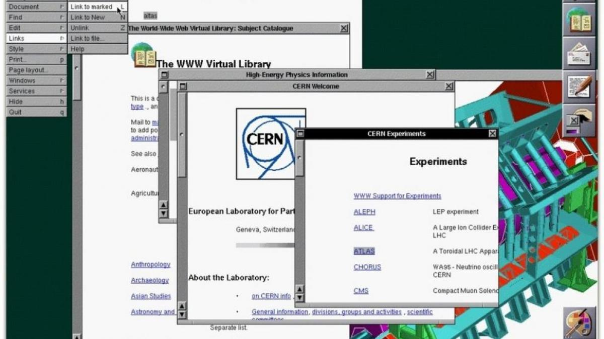

El mundo ha ido cambiando con el paso de los años y mucho más cuando se habla de la digitalización; la principal razón de ello es la competencia entre organizaciones empresariales y el deseo de satisfacer la necesidad de los clientes y empleados de una forma más innovadora y estéticamente cómoda para el usuario.
Al analizar la evolución del mundo digital desde 1990 hasta la actualidad (Web Design. the Evolution of the Digital World 1990-Today) se evidencian marcados avances del diseño web con el paso de los años; en 1990 el contenido era solo eso, contenido, sin nada de diseño ni estructuras, simplemente la información necesaria y algunos palabras que permitían direccionar a otro sitio para visualizar información. En 1996 se comenzó a introducir un poco de diseño, ya estaba la presencia de fondos, colores e imágenes estáticas, sin embargo, no fue hasta el año 1999 donde se comenzaron a ver botones. En el 2005 aproximadamente, las web empezaron ser como las conocemos el día de hoy, la tipografía era diferente, la estructura no era puramente texto y realmente se evidenciaba una estética mayor en comparación a los demás años.
Esto estaba ocurriendo no porque las organizaciones no tuvieran el suficiente ingenio o dinero para diseñar la web sino porque la época no permitía un mayor avance que constantemente con el paso del tiempo esto fue cambiando y es lo que conocemos como la evolución digital. De hecho, según Martinez S. en su artículo La evolución histórica de la Transformación Digital de las economías europeas (2019) la transformación digital no es algo innovador, pues este proceso comenzó hace tres siglos atrás y se ha ido consolidando en 4 grandes revoluciones; para resumir un poco cada una de ellas, la primera industria comenzó aproximadamente hacia los años 1970, la segunda con el avance en la creación y mejora de nuevos materiales, la tercera con una mayor inteligencia y productividad en las plantas industriales, y la última con sistemas flexibles que puedan evolucionar de forma rápida y eficiente. Estas cuatro revoluciones son las que han permitido un gran avance en la digitalización y el desarrollo WEB.
La digitalización es un proceso que considero que no tiene límites, entre más pase el tiempo la tecnología va a permitir nuevos desarrollos e innovaciones que permitan una mayor comodidad. Porque a mi parecer la evolución permite eso, una mayor comodidad y una mejor experiencia al usuario; al hacer el análisis de la evolución desde 1990 podemos ver que la información que se muestra es la necesaria y siempre ha estado hasta el día de hoy, pero lo que ha cambiado en sí es la estética y la comodidad con la que se puede interactuar con la web para visualizar la información, por eso pienso que se genera una mayor competencia entre las organizaciones, el cliente siempre querrá lo visualmente más estético.
Por otro lado, también considero que la evolución digital está cambiando todo el tiempo, porque siempre está el deseo de innovar y mejorar en cualquier ámbito, en este caso la digitalización, que cada vez más involucra nuevas oportunidades para que la persona que interactua con la web sienta una experiencia diferente. Al analizar el transcurso desde 1990 creo que en realidad los avances han sido heredados de los demás, por eso al realizar algo y más en el mundo digital es necesario estar un paso más adelante de los demás para marcar una diferencia y "ganar" la competencia, de esta manera se deberían obtener mejores resultados y cumplir con un mayor número de objetivos.